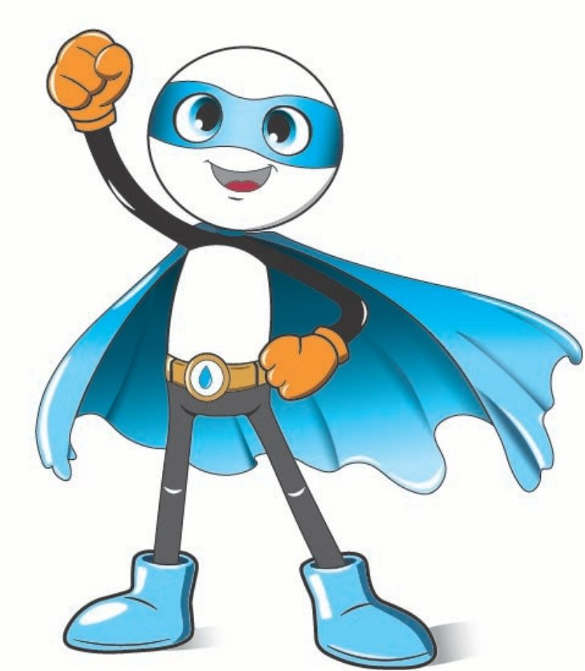
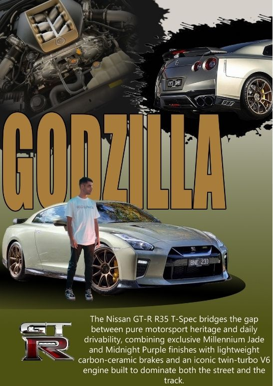
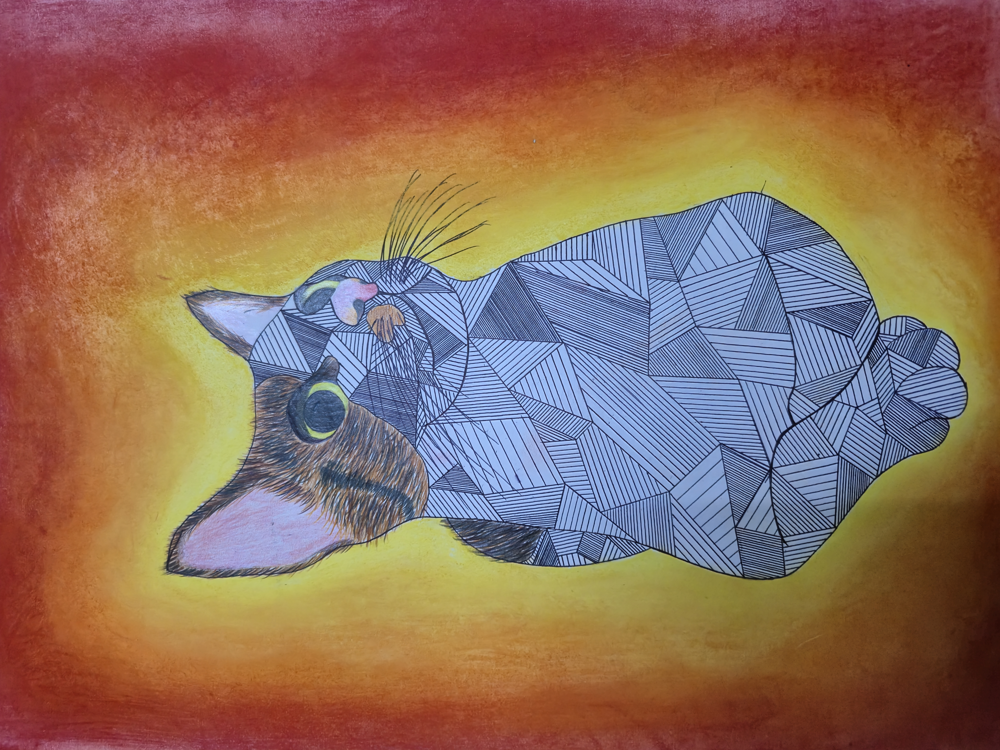

Economiz Delo
This mascot was created for a project called “Economiz Delo,” which focused on saving and protecting water.
The superhero design represents the importance of taking action to conserve water. His blue colors symbolize water, while his friendly and energetic appearance encourages people to use water responsibly and avoid wasting it.

Car poster
This poster was created using Adobe Photoshop to showcase the Nissan GT-R R35, my dream car. I combined different car images, engine details, the GT-R logo, and bold typography to create a powerful automotive design. The poster highlights the car’s performance, motorsport heritage, and ability to combine track performance with everyday driving.

Artwork
This artwork was created as a final project where I had to combine different elements into one creative composition. I used my own cat as the main subject and combined geometric patterns and detailed line work with a colorful background. I used colored pencils, pen, and dry pastels to create the artwork. The contrast between the blue cat and the warm red and yellow background makes the artwork unique and eye-catching.